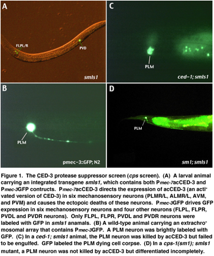
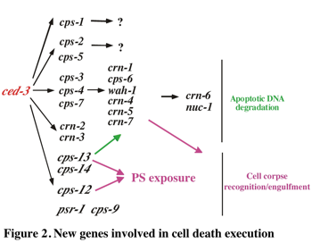

CELL DEATH PROTEASES
Characterization of proteases involved in cell death pathways

1) Identification and characterization of downstream pathways of the CED-3 cell death protease
Analysis of downstream pathways of important enzymatic biomolecules (e.g., kinases and proteases) that have multiple substrates has always been a difficult challenge. Targets of these enzymes could be difficult to identify through conventional genetic screens, since elimination of one of the multiple targets of an enzyme may fail to cause any visible phenotype that can be scored in genetic screens. Enzymatic targets could also be difficult to identify through commonly used biochemical approaches such as protein interaction screens that require stable interaction rarely seen between an enzyme and a substrate. In fact, to date there have been no good methods available that can systematically and effectively address the problem of substrate identification.

During apoptosis, a family of aspartate-specific cysteine proteases named caspases are activated proteolytically to execute the apoptotic program. Little is known about the identities of their in vivo targets or their downstream pathways that mediate the killing functions. We have developed a novel, GFP-based genetic screen to identify downstream targets of the C. elegans caspase, CED-3. In this screen, the green fluorescent protein (GFP) and a constitutively activated version of CED-3 were co-expressed in C. elegans mechanosensory neurons and GFP was used as a sensitive cell existing marker to isolate mutations that either partially suppress or delay ectopic neuronal deaths caused by the activated CED-3 (Figure 1). These CED-3 protease suppressors (we named these cpsmutations) likely affect genes that act downstream of, or in parallel to, ced-3 to mediate various cell-killing processes. We have screened approximately 150,000 C. elegans haploid genomes and isolated more than 80 cps mutations. Phenotypic analyses of these cps mutants suggest that these mutations not only suppress CED-3-induced ectopic neuronal deaths but also affect normal programmed cell death in C. elegans, indicating that they are true cell-death mutants. Genetic analyses of these cps mutations indicate that they affect at least fourteen new cell death genes (cps-1 to cps-14) and one previously identified gene (ced-1), which acts downstream of ced-3 to remove apoptotic cell corpses. Phenotypic analyses of these cps mutants suggest that they can be categorized into three major groups: 1) mutations that weakly suppress cell deaths in C. elegans (cps-1 and cps-2), 2) mutations that delay the normal progression of apoptosis (cps-3, 4, 5, 6, 7, 8, 10, and 11), and 3) mutations that may cause defect in the removal of cell corpses (cps-9, 12, 13, 14). These 14 cps genes may encode important components that act downstream of the CED-3 protease to regulate or execute different aspects of the cell disassembly and removal process (Figure 2). Indeed, using the TUNEL assay (an assay used to detect DNA breaks generated during apoptosis), we found that cps-3, 4, 6, 7, 8, 10, 11, 13 and 14 genes are involved in the chromosome fragmentation process, one of the key steps and a hallmark of apoptosis. In addition, using an annexin V staining assay (used to detect surface-exposed phosphatidylserine), we found that three genes (cps-12, cps-13, and cps-14) affect externalization of phosphatidylserine (PS) in apoptotic cells. PS normally is restricted to the inner leaflet of the plasma membrane but is exposed or flipped out in apoptotic cells and has been suggested to serve as an engulfment signal for phagocytosis. How PS is flipped out in dying cells during apoptosis has not been clear and is a topic of intense studies. Molecular characterization of cps-12, cps-13 and cps-14 will likely provide important insights towards addressing this fundamental biological question.
We recently cloned the cps-6 gene and found that cps-6 encodes a homologue of human mitochondrial endonuclease G (endoG). In collaboration with Dr. Xiaodong Wang's group at the University of Texas Southwestern Medical Center, we showed that the CPS-6 protein localizes to C. elegans mitochondria and possesses an endonuclease activity that is capable of inducing the generation of apoptotic DNA ladders in isolated Hela cell nuclei. Furthermore, the mouse EndoG can substitute for the functions of cps-6 in C. elegans, suggesting that CPS-6 and EndoG define an evolutionarily conserved DNA degradation pathway. Our study also demonstrates for the first time that mitochondria is important for apoptosis in invertebrates and is a conserved regulator of apoptosis (Abstract and PDF).
2) Characterization of the C. elegans mitochondrial cell death pathways
The findings that apoptotic regulators such as cytochrome c, endoG, and apoptosis-inducing-factor (AIF) are released from mitochondria to mediate different aspects of apoptosis indicate that mitochondria plays an important role in mammalian apoptosis. A family of proteins containing a unique Bcl-2 homology 3 motif (BH3) are involved in releasing these mitochondrial apoptogenic factors. The finding that cps-6 encodes a mitochondrial endonuclease prompted us to examine whether there are additional mitochondrial proteins involved in C.elegans apoptosis. We characterized the C. elegans homologue of AIF, a human mitochondrial oxidoreductase that is released from mitochondria during apoptosis to induce chromosome condensation and fragmentation. Intriguingly, the oxidoreductase activity of AIF is dispensable for its apoptogenic functions and AIF does not possess a nuclease activity, raising a major question of how AIF induces apoptosis. We cloned the worm AIF homologue, wah-1, and used RNA interference (RNAi) to study its functions in C. elegans apoptosis. We found that reduction of the wah-1 activity in C.elegans delays the normal progression of apoptosis, results in accumulation of TUNEL-positive DNA breaks, and enhances the defects of other cell death mutants, indicating that C. elegans AIF does play an important role in regulating C. elegans apoptosis. Interestingly, wah-1(RNAi) results in cell death phenotypes that are similar to those of the cps-6 mutant and fails to enhance the cps-6 cell death defects, indicating that wah-1 and cps-6 function in the same cell death pathway. Indeed, we found that WAH-1, which also localizes to C. elegans mitochondria, can associate and cooperate with CPS-6 in vitro to promote DNA degradation. In vivo, co-expression of wah-1 and cps-6 can synergistically induce cell killing. These findings indicate that CPS-6/EndoG is likely a target or an effector that WAH-1/AIF interacts with to induce chromosome fragmentation during apoptosis and that CSP-6/EndoG and WAH-1/AIF define a single evolutionarily conserved cell death pathway initiated from mitochondria. Importantly, WAH-1 can be released from mitochondria by EGL-1, a C. elegans BH3-domain containing cell death activator, in a manner similar to the release of cytochrome c or EndoG from mitochondria by mammalian BH3-domain containing proteins such as Bid or Bim. However, this EGL-1-induced release of WAH-1 is dependent on the activity of the CED-3 protease, indicating that worm AIF functions in a caspase-dependent manner. These observations strongly suggest that the mitochondrial cell death pathway is conserved between nematodes and humans (Abstract and PDF).

We are currently focusing on identifying additional mitochondrial factors that are important for the regulation and execution of programmed cell death in C. elegans using both genetic and biochemical approaches. We are particularly interested in understanding how mitochondrial apoptogenic factors are released from mitochondria to affect various aspects of apoptosis. We hope to identify most components functioning in C. elegans mitochondrial cell death pathways.
3) Functional genomic analysis of the apoptotic DNA degradation process in C. elegans
The observations that multiple genes (cps-3, 4, 6, 7, 8, 10, 11, 13, 14 and wah-1) are involved in the apoptotic DNA degradation process in C. elegans indicate that this is likely a rather complicated and tightly regulated process. To identify all the nucleases involved in C. elegans apoptosis, we conducted a candidate-based, genome-wide RNAi screen to systematically search for genes important for apoptotic DNA degradation in C. elegans. We used RNAi to individually inhibit the expression of 77 C. elegans genes that encode nucleases or nuclease-related proteins and have identified nine candidate apoptotic nucleases, including two previously known apoptotic nucleases (CPS-6 and NUC-1). We named these new cell death-related nucleases as CRN nucleases. Molecular genetic analyses of these crn genes indicate that these nine apoptotic nucleases comprise at least two independent pathways that contribute to cell killing by degrading chromosomal DNA, with cps-6, crn-1, crn-4, crn-5, and crn-7 acting together in one pathway and crn-2/crn-3 in another pathway (Figure 2). nuc-1 and crn-6 appear to act at later stages of apoptotic DNA degradation. Interestingly, several crn genes have human homologues that play important roles in RNA processing and splicing, protein folding, DNA replication and damage repair, suggesting that these CRN proteins may play dual roles in both cell survival and cell death. The identification of seven crn genes will allow systematic deciphering of the mechanisms of apoptotic DNA degradation, which remain a poorly understood biological process (Abstract and PDF).
As a first step towards the understanding of how apoptotic nucleases interact to promote apoptotic DNA degradation, we initiated biochemical and mechanistic studies of CRN-1, a homologue of the human Fen-1 endonuclease that plays important roles in DNA replication and repair. We found that CRN-1 localizes to nuclei and can associate and cooperate with CPS-6 to promote stepwise DNA fragmentation, utilizing the endonuclease activity of CPS-6 and both the 5'-3' exonuclease activity and a novel gap-dependent endonuclease activity of CRN-1. Our results suggest that CRN-1/FEN-1 may play a critical role in switching the state of cells from DNA replication/repair to DNA degradation during apoptosis (Abstract and PDF).
4) Identification and characterization of genes involved in exposure or recognition of 'eat-me' signals during removal of apoptotic cell corpses
Phagocytosis of apoptotic cells is an integral part of cell death execution and an important event in tissue remodeling, suppression of inflammation, and regulation of immune responses. During apoptosis, 'eat-me' or engulfment signals are exposed or released from the dying cells to trigger the phagocytic events by neighboring cells or macrophages. Very little is known about what these 'eat-me' signals are or how they are exposed or released from the dying cells. One of the candidate 'eat-me' signals is phosphatidylserine (PS), which normally is restricted to the inner leaflet of the plasma membrane but is exposed on the surface of apoptotic cells. It is unclear what regulates the externalization of PS in apoptotic cells and how phagocytes recognize PS and subsequently initiate the phagocytic events. From our cps screens, we have identified three genes (cps-12, cps-13 and cps-14) that affect the externalization of PS in apoptotic cells. Molecular characterization of these three genes will provide important insights on how PS externalization is regulated and executed in apoptotic cells.
Recently, a putative phosphatidylserine receptor (PSR) was identified and proposed to mediate PS recognition and phagocytosis. Interestingly, C. elegans contains a gene (F29B9.4) that shares 56% sequence identity with human PSR. To investigate whether the C. elegans PSR homologue (named psr-1) affects cell corpse engulfment, we isolated a deletion allele (tm469) in the psr-1 locus and analyzed its mutant phenotypes. We found that the psr-1(tm469) mutation does result in a defect in cell corpse engulfment. Interestingly, psr-1 appears to act in the same cell corpse engulfment pathway as ced-2, ced-5, ced-10 and ced-12. Genetic bypass experiments indicate that psr-1 acts upstream of ced-2, ced-5, ced-10 and ced-12 to control cell corpse engulfment. In vitro C. elegans PSR-1 behaves like human PSR and binds preferentially PS or cells with exposed PS. Interestingly, the intracellular domain of PSR-1 interacts with CED-5 and CED-12, suggesting that PSR-1 may transduce engulfment signal through CED-5 and CED-12. Our findings suggest that PSR-1 is likely an upstream receptor for the signaling pathway containing CED-2, CED-5, CED-10 and CED-12 proteins and plays an important role in recognizing phosphatidylserine during phagocytosis (Abstract and PDF).
Related Publications:
Parrish, J., Li, L., Klotz, K., Ledwich, D., Wang, X.D., and Xue, D. (2001). C. elegans mitochondrial endonuclease G is important for apoptosis. Nature 412, 90-94. (Abstract and PDF). Nature Reviews Mol. Cell Biol.
Wang, X.C., Yang, C.L., Cai, J.J., Shi, Y.G., and Xue, D. (2002). Mechanisms of AIF-mediated apoptotic DNA degradation in Caenorhabditis elegans. Science 298, 1587-1592. (Abstract andPDF). Nature Reviews Molecular Cell Biology (PDF)
Parrish, J. and Xue, D. (2003). Functional genomic analysis of apoptotic DNA degradation in C. elegans. Mol. Cell 11, 987-996. (Abstract and PDF)
Parrish, J., Yang, C.L., Shen, B.H., and Xue, D. (2003). CRN-1, a Caenorhabditis elegans FEN-1 homologue, cooperates with CPS-6/EndoG to promote apoptoticDNA degradation. EMBO. J. 22, 3451-3460. (Abstract and PDF)
Wang, X.C., Wu, Y.C., Fadok, V., Lee, M.C., Gengyo-Ando, K., Cheng, L.C., Ledwich, D., Hsu, P.K., Chen, J.Y., Chou, B.K., Henson, P., Mitani, S., and Xue, D. (2003). Cell Corpse Engulfment Mediated by C. elegans Phosphatidylserine Receptor Through CED-5 and CED-12. Science 302, 1563-1566. (Abstract and PDF). Science Perspectives (PDF)
Wang, X.C., Wang, J., Gengyo-Ando, K., Gu, L.C., Sun, C.L., Yang, C.L., Shi, Y., Kobayashi, T., Shi, Y.G., Mitani, S., Xie, X.S., and Xue, D. (2007). "C. elegans mitochondrial factor WAH-1 promotes phosphatidylserine externalization in apoptotic cells through phospholipid scramblase SCRM-1". Nature Cell Biology 9, 541-549. (Abstract and PDF). Nature Reviews Molecular Cell Biology (PDF)
Darland-Ransom, M., Wang, X.C., Sun, C.L., Mapes, J., Gengyo-Ando, K., Mitani, S. and Xue, D. (2008). Role of C. elegans TAT-1 protein in maintaining plasma membrane phosphatidylserineasymmetry. Science 320, 528-531. (Abstract and PDF). Science Perspectives (PDF)
Breckenridge, D., Kang, B.H., Kokel, D., Mitani, S., Staehelin, A.L., and Xue, D. (2008). Caenorhabditis elegans drp-1 and fis-2 regulate distinct cell death execution pathways downstream of ced-3and independent of ced-9. Mol. Cell 31 586-597. (Abstract and PDF)
Breckenridge, D., Kang, B.H., and Xue, D. (2009). Bcl-2 proteins EGL-1 and CED-9 do not regulate mitochondrial fission or fusion in Caenorhabditis elegans. Current Biology 19, 768-773.(Abstract and PDF)
Hsiao, Y.Y., Nakagawa, A., Shi, Z., Mitani, S., Xue, D. and Yuan, H. S. (2009). Crystal structure of CRN-4: implications for domain function in apoptotic DNA degradation. Mol. Cell. Biol. 29, 448-457. (Abstract and PDF)
Lai, H.J., Lo, S.Z., Kage-Nakadai, E., Mitani, S., and Xue, D. (2009). The roles and acting mechanism of Caenorhabditis elegans DNase II genes in apoptotic DNA degradation and development. PLoS One 4, e7348. (Abstract and PDF)
Nakagawa, A.*, Shi, Y.*, Kage-Nakadai, E., Mitani, S., and Xue, D. (2010). Caspase-Dependent Conversion of Dicer Ribonuclease into a Death-Promoting Deoxyribonuclease. Science 328, 327-334. *Equal contributions (Abstract and PDF). Research Article featured on the cover of Science and Science Perspectives, Developmental Cell Preview, Highlights in Nature Structural and Molecular Biology, Nature Reviews Molecular Cell Biology, Disease Models and Mechanisms, and Faculty of 1000
Wang, X.C., Li W., Zhao, D.F., Liu, B., Shi, Y., Chen, B.H., Yang, H.W., Guo, P.F., Geng, X., Shang, Z.H., Peden, E., Kage-Nakadai, E., Mitani, S., and Xue, D. (2010). C. elegans transthyretin-like protein TTR-52 mediates recognition of apoptotic cells by the CED-1 phagocyte receptor. Nature Cell Biology, in press. (Abstract and PDF) Nature Cell Biology News and Views
Lin, J.L., Nakagawa, A., Lin, C.L., Hsiao, Y.Y., Yang, W.Z., Wang, Y.T., Doudeva, L.G., Skeen-Gaar, R.R., Xue, D., and Yuan, H.S. (2012). Structural insights into apoptotic DNA degradation by CED-3 Protease Suppressor-6 (CPS-6) from Caenorhabditis elegans. Journal of Biological Chemistry 287:7110-7120 (Abstract and PDF).
Mapes, J., Chen, Y.Z., Kim, A., Mitani, S., Kang, B.H., and Xue, D. (2012). CED-1, CED-7, and TTR-52 act in a pathway to regulate exoplasmic phosphatidylserine expression on apoptotic and phagocytic cells. Current Biology 22, 1267-1275. (Abstract and PDF). Faculty of 1000
Chen, Y.Z., Mapes, J., Lee, E.S. and Xue, D. (2013). Caspase-mediated activation of Caenorhabditis elegans CED-8 promotes apoptosis and PS externalization. Nature Communications 4:2726doi: 10.1038/ncomms3726. (Abstract and PDF)
Ge, X., Zhao, X., Nakagawa, A., Gong, X., Skeen-Gaar, R., Shi, Y., Gong, H.P., Wang, X.Q., and Xue, D. (2013). A novel mechanism underlies caspase-dependent conversion of the dicerribonuclease into a deoxyribonuclease during apoptosis. Cell Research 24: 218-232 (Abstract and PDF).
Nakagawa, A., Sullivan, K., and Xue, D. (2014). Caspase-activated phosphoinositide binding by CNT-1 promotes apoptosis by inhibiting the AKT pathway. Nature Structural & Molecular Biology 21, 1082-1090. (Abstract and PDF).
Yang, H.W.*, Chen, Y.Z.*, Zhang, Y.*, Wang, X.H., Zhao, X., Godfroy, J.I., Liang, L., Zhang, M., Zhang, T.Y., Yuan, Q., Royal, M.A., Driscoll, M.D., Xia, N.S., Yin, H., and Xue, D. A lysine-rich in the phosphatidylserine receptor PSR-1 mediates recognition and removal of apoptotic cells. Nature Communications , 6: 5717 doi: 10.1038/ncomms6717. *These authors contributed equally to this work (Abstract and PDF).
Weaver, B.P., Zabinsky, R., Weaver, Y.M., Lee, E.S., Xue. D., and Han, M. (2014). CED-3 caspase acts with miRNAs to regulate non-apoptotic gene expression dynamics for robust development in C. elegans. eLife doi: 10.7554/eLife.04265. (Abstract and PDF).
Neumann, B., Coakley, S., Giordano-Santini, R., Linton, C., Lee, E.S., Nakagawa, A., Xue, D., and Hilliard, M.A. (2015). EFF-1-mediated regenerative axonal fusion requires components of the apoptotic pathway. Nature 517, 219–222 (Abstract and PDF).
Sullivan, K.*, Nakagawa, A.*, Xue, D.#, and Espinosa, J.M.# (2015). Human ACAP2 is a homolog of C. elegans CNT-1 that promotes apoptosis in cancer cells. Cell Cycle , in press. *Equal contribution. #Co-corresponding authors. (Abstract and PDF).
Lin, J.L.*, Nakagawa, A.*, Skeen-Gaar, R.R., Yang, W.Z., Zhao, P., Zhang, Z., Ge, X., Mitani, S., Xue, D.#, and Yuan, H.S.# (2016). Oxidative Stress Impairs Cell Death by Repressing the Nuclease Activity of Mitochondrial Endonuclease G. Cell Reports 16, 279–287. *Equal contribution. #Co-corresponding authors. (Abstract and PDF).